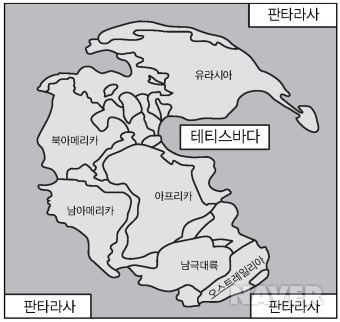

1. 판구조론의 성립과정
- 대륙이동설
- 맨틀대류설
- 해안저확장설
- 판구조론
- 연습 웹페이지로 가기
-대륙이동설
대륙이동설의 근거로 제시한 것은 남아메리카와 아프리카의 해안선의 유사성, 빙하의 흔적, 고생대 생물 화석의 분포도, 산맥(지형의 유사성)이 있다.
하지만 당시 대륙을 이동하게하는 원인을 설명하지 못했다.
ctrl O --> 웹페이지 시작 키
대륙이동설(베게너)-맨틀대류설(홈스)-해안저확장설(해안측심법으로 발견된 해저지형의 생성원리 설명)
-판 구조론(암석권-연약권)

고지자기
지리상 북극
지리적 북극(진북극), 자북극, 복각, 편각
지리적 북극 : 지구 자전축과 북반구의 접점
자북극 : 나침반의 N극이 가리키는 지점
복각
나침반의 자침과 평행선이 이루는 각
자기적 적도에서 복각은 0도, 자북에서 복각은 90도
ex)고지자기의 복각이 30도일때 그 암석은 자적도에서 위도 30도 북쪽부분에서 생성